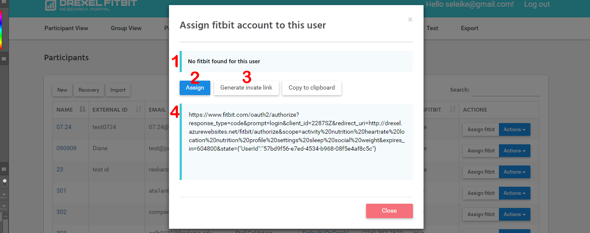
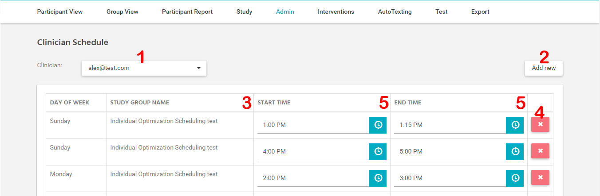

Administration¶
Описание ролей¶
Master - nак как на портале отключена регистрация, то для первоначального создания пользователей создан специальный аккаунт - master account. Данный аккаунт обладает теми же привилегиями что и администраторы, но не может быть удален или изменен.
- Administrator - обладает полным доступом ко всем функциям портала:
- Просмотр, создание и редактирование данных всех Study
- Просмотр, создание и редактирование настроек Interventions
- Просмотр, создание и редактирование расписания Clinician
- Просмотр, создание и редактирование пользователей (включая администраторов)
- Просмотр, создание и редактирование автоматических текстов
- Просмотр данных ВСЕХ Participant
- Export
- Report
Note
В данный момент любой администратор может добавить другого администратора.
Clinician – роль с ограниченными возможностями. Не может добавлять и редатировать пользователей. Просматривать данные Participant’s не входящих в группы в которых является руоводителем.
Participant – данные пользователи в данный момент не имеют возможности авторизации на портале. Являются объектами обработки данных.
Administrators¶
Управление пользователями с ролью Administrator осуществляется на странице Administrators.
{kind=link}
Administrators Page Interface
- Создание нового адм
- востановление заархивированных администраторов
- редактирование выбранного пользователя
- архивирование выбраного пользователя
Note
Заархивированные адм не имеют возможности авторизоваться на портале, а так же не доступны для назначения координаторами исследования. Позднее они могут быть восстановлены (Смотрите пункт 3)
Clinicians¶
Управление пользователями с ролью Clinician осуществляется на странице Clinicains.

Clinicians Page Interface
- создание нового клин
- востановление клин
- поиск по всем полям актив клин
- редактирование
- архивирование
Participants¶
Управление пользователями с ролью Participant осуществляется на странице Participants.
{kind=link}
Participants Page Interface
- создание нового пользователя
- востановление заархивированных
- функция импорта ( массового добавления пользователей (возможно устарело))
- поиск по всех пользователям
- Поля имени participant, так же является ссылкой на страницу Participant View (LINK!)
- Поле ExternalId, может содержать любое значение однозначно индетифицируещее пользователя или ничего
- Координатор группы в которой состоит Part
- Название группы в которой состоит парт, также является ссылкой на Group View (link)
- показывает привязан ли данному пользователю аккаунт фитбита
- редактирование пользователя
- архивирование
- привязка аккаунта фитбит к данному пользователю
- Окно для управления аккунтом фитбит данного пользователя.
- 
{kind=link}
Fitbit Assinging Window
- показывает привязан ли фитбит аккаунт
- ссылка для перехода на сайт фитбит для акторизации данного пользователя
- ссылка так же может быть сгенерирована и отображена в окне
- отображение сгенерированной ссылки
- добавить извещение о успегном создании сабсрипшена
Clinician Schedule¶
Страница для управления расписанием клин - http://drexel.azurewebsites.net/Schedule

Clinician Schedule Page Interface
- выбор пользователя для редактирования
- добавления нового правила для определенной группы
- Данное поле отображает для какой группы создана расписание либо указывает что данная расписание является стандартной
- Эллемент для удаления расписание для определенных групп, удаление стандарного расписания недоступно
- поля показывающее время начала и конца временного периода, который готов потратить клинишн в отпереленный день недели
Время конца периода не может превышать время начала периода, также периоды не должны пересекаться с другими периодами для этого дня.

Окно добавления расписания для группы
- В окне добавления расписания в поле выбора группы отображаются только те группы для которых клинишн является координатором
Use recovery¶
На портале мы не удаляем данные и пользователей, поэтому любой заархивированный пользователей позднее может быть востановлен.